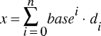

| Autor: | Wojciech Muła |
|---|---|
| Dodany: | 3.05.2002 |
| Aktualizacja: | 27.10.2002 |
Contents
Przy konwersji wykorzystywany jest oczywiście dobrze znany wzór na wartość liczby zapisaną w wagowym, pozycyjnym systemie liczenia.
Tak więc każdemu znakowi z łańcucha przyporządkowuje się wartość d (cyfry), oraz wagę zależna od pozycji. W artykule zostaną pokazane (ogólne) algorytmy w C, oraz zoptymalizowane funkcje asemblerowe.
Z przedstawionym algorytmem po raz pierwszy zetknąłem się w asmpaku, w kodzie autorstwa Shielda/UnderPL. Dużym atutem algorytmu jest brak konieczności poznania długości łańcucha przed jego konwersją — wszak w C jest to niemały problem.
Funkcje bin, oct, dec i hex zostaną przedstawione w następnym punkcie.
int simple_strtol(const char* s, int base)
{
int (*digit_value)(char); /* funkcja konwertująca, zależna od `base' */
int result = 0;
switch (base)
{
case 2: digit_value = bin; break;
case 8: digit_value = oct; break;
case 10: digit_value = dec; break;
case 16: digit_value = hex; break;
default: fputs("nieprawidłowa podstawa systemu", stderr);
errno = EINVAL;
return -1;
}
while (*s)
{
result *= base; /* przesuń cyfry w lewo, robiąc tym samym
"miejsce" na nową cyfrę */
result += digit_val(*s++); /* dodaj nową cyfrę */
if (errno != 0)
return -1;
}
return result;
}
Przy założeniu, że jednak długość łańcucha jest znana, to konwersja przebiega zgodnie ze wzorem ogólnym (pozwolę sobie pominąć sprawdzanie błędów i przyjmę base == 10):
int simple_strtol2(const char *s, int length)
{
int i, result = 0, weight = 1;
for (i=length-1; i>=0; i--)
{
result += weight*dec(s[i]);
weight *= 10;
}
}
W przypadku pierwszej (wg mnie lepszej) metody kluczowym wyrażeniem jest:
result = result * base + digit_value(c);
Analogiczną operację realizuje instrukcja lea; załóżmy, że eax := result, oraz edx := digit_value(c).
; system dwójkowy lea eax, [eax*2 + edx] ; system ósemkowy lea eax, [eax*8 + edx] ; system dziesiętny lea eax, [eax*4 + eax] ; eax *= 5 lea eax, [eax*2 + edx] ; system szesnastkowy shl eax, 4 add eax, edx
W przypadku gdyby wartość bitu była przechowywana we fladze przeniesienia to można użyć rozkazu adc eax, eax, aczkolwiek wydaje mi się, że przepisanie wartości rejestru do CF jest zbyt kosztowne.
Druga metoda jest wolniejsza, choćby ze względu na dwa mnożenia. Jednak z pomocą przychodzą rozkazy MMX, wszak za pomocą pmullw można mnożyć równocześnie cztery liczby. Proponuję rozwiązanie, które pozwoli obliczyć wartość czteroznakowego łańcucha — oczywiście przy założeniu, że dane wejściowe są prawidłowe.
segment .data
weights dw 1000, ; wagi kolejnych cyfr w systemie dziesiętnym
100, ; (można również zmodyfikować dla systemów dwójkowego
10, ; oraz ósemkowego)
1
ASCII db 0x30,0x30,0x30,0x30, 0x30,0x30,0x30,0x30 ; ASCII('0')=0x30
segment .text
; esi -> 4 cyfry ascii (np. "5762")
_4digits_to_number:
pxor mm7, mm7 ; np.
movd mm0, [esi] ; mm0 = | 0 | 0 | 0 | 0 |'2'|'6'|'7'|'5'|
psubb mm0, [ASCII] ; mm0 = | ? | ? | ? | ? | 2 | 6 | 7 | 5 |
punpcklbw mm0, mm7 ; mm0 = | 2 | 6 | 7 | 5 |
pmullw mm0, [weights] ; mm0 = | 2 | 60 | 700 | 5000 |
movq mm1, mm0
; pozostaw starsze i młodsze słowa wyników
psrlw mm0, 8 ; mm0 = | 0 | 0 | 2 | 19 |
psllw mm1, 8 ; mm1 = | 2 | 60 | 188 | 136 |
; sumowanie
psadbw mm0, mm7 ; mm0 = | 0 | 0 | 0 | 21 |
psadbw mm1, mm7 ; mm1 = | 0 | 0 | 0 | 386 |
movd eax, mm0 ; eax = 21
movd ebx, mm1 ; ebx = 386
shl eax, 8 ; eax = 5376
add eax, ebx ; eax = 5762
ret
Ewentualnie można skorzystać z dobrodziejstw rozkazu pmaddwd.
; esi -> 4 cyfry ascii (np. "5762")
_4digits_to_number2:
pxor mm7, mm7 ; np.
movd mm0, [esi] ; mm0 = | 0 | 0 | 0 | 0 |'2'|'6'|'7'|'5'|
psubb mm0, [ASCII] ; mm0 = | ? | ? | ? | ? | 2 | 6 | 7 | 5 |
punpcklbw mm0, mm7 ; mm0 = | 2 | 6 | 7 | 5 |
pmaddwd mm0, [weights] ; mm0 = | 2+60 | 700+5000 |
movq mm1, mm0
psrlq mm1, 32 ; mm1 = | 0 | 2+60 |
paddd mm0, mm1 ; mm0 = | 2+60 | 5762 |
movd eax, mm0
ret
Poniżej funkcje w języku C zwracające wartości cyfr dla systemów liczenia: dwójkowego, ósemkowego, dziesiętnego i szesnastkowego.
#include <stdio.h>
#include <ctype.h>
#include <error.h>
extern int errno;
/* sygnalizacja błędu, wspólna dla wszystkich procedur */
#define ERROR \
fputs("nieprawidłowa cyfra", stderr); \
errno = EINVAL; \
return -1 \
int bin(char c)
{
if (c == '0') return 0;
if (c == '1') return 1;
ERROR;
}
int oct(char c)
{
if (c >= '0' && c <= '7')
return c - '0'
ERROR;
}
int dec(char c)
{
if (c >= '0' && c <= '9')
return c - '0'
ERROR;
}
int hex(char c)
{
if (!isxdigit(c))
ERROR;
if (isdigit(c)) /* c='0'...'9' */
return dec(c)
else /* c='a'...'f' lub 'A'...'F' */
{
c = tolower(c);
return c - 'a' + 10;
}
}
int hex2(char c)
{
static char hex_lookup = "0123456789abcdef";
int i;
c = tolower(c);
for (i=0; i<16; i++)
if (c == hex_lookup[i])
return i;
ERROR;
}